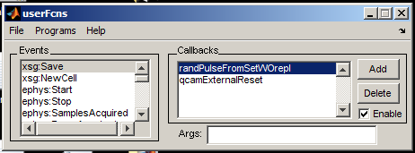
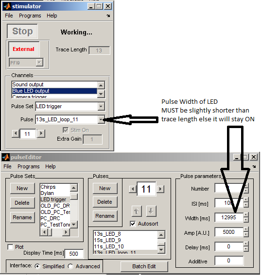
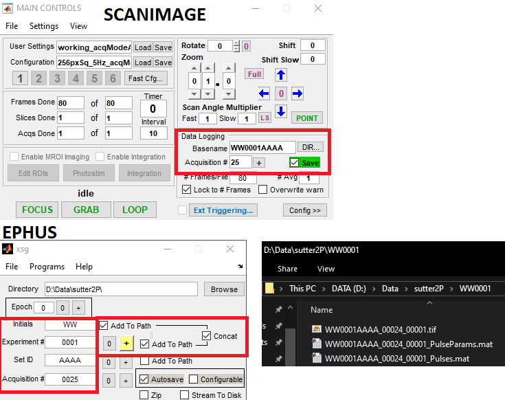

Configuration
Ephus
Startup file
Key configuration values:
xsgStartDirectory = 'D:\Data\sutter2P\';
%Acquirer channels (Analog Input)
acqChannelNames = {'sound output check', 'Green LED output check'}; % Cell array of descriptive names for analog input acquisition channels to configure, e.g. {'Lick Sensor' 'Nose Poke Sensor'},
acqBoardIDs = [2 2]; % A single number (e.g. 1 for 'Dev1') specifying DAQmx board for /all/ named acquisition channels; or, an array of numbers of length equal to 'acqChannelNames' (e.g. [1 1 1 2 2] indicating 'Dev1' for first 3 channels, 'Dev2' for last 2 channels) identifying DAQmx board on which each of the named acquisition channels appears.
acqChannelIDs = [16 17]; % Array of numbers, of length equal to 'acqChannelNames', identifying DAQmx channel number (e.g. 1 for AI1) for each of the named acquisition channels (e.g. [0 1 2 0 1] indicating AI0-2 for first 3 channels and AI0-1 for last 2 channels, for case of multiple boards).
%Stimulator channels (Analog Output)
stimChannelNames = {'Sound output', 'Blue LED output', 'Camera trigger', 'Green LED output'}; % Cell array of descriptive names for analog output stimulus channels to configure, e.g. {'Whisker Stimulator' 'Position Encoder'},
stimBoardIDs = [2 2 2 2]; % A single number (e.g. 1 for 'Dev1') specifying DAQmx board for /all/ named analog stimulus channels; or, an array of numbers of length equal to 'stimChannelNames' (e.g. [1 1 1 2 2] indicating 'Dev1' for first 3 channels, 'Dev2' for last 2 channels) identifying DAQmx board on which each of the named analog stimulus channels appears.
stimChannelIDs = [1 2 3 0]; % Array of numbers, of length equal to 'stimChannelNames', identifying DAQmx channel number (e.g. 1 for AI1) for each of the named analog stimulus channels (e.g. [0 1 2 0 1] indicating AI0-2 for first 3 channels and AI0-1 for last 2 channels, for case of multiple boards).
initialSampleRate = 250000; %(REQUIRED) Initial rate, in Hz, to use for all analog and digital input/output channels configured for use in Ephus
triggerOrigin = '/dev2/port0/line2'; %(REQUIRED) Full DAQmx specification of single digital line on /one/ board (e.g. '/dev1/port0/line0') used as the Ephus default trigger pulse to synchronize the one or more boards.
triggerDestinations = {'PFI9','PFI0'}; %PFIO is external trigger-CTA %(REQUIRED) Cell array of one or more DAQmx PFI terminal names configured as the choice of PFI terminals on which Ephus must receive a trigger input signal, on /all/ of the DAQmx boards configured for use by Ephus.
sampleClockOrigin = '/dev2/ctr0'; %this is ctr0 is PFI12, ctr1 is PFI13 CTA % Full DAQmx specification of single counter output channel on /one/ board (e.g. '/dev1/ctr0') on which the sample clock generated by Ephus appears. Ephus employs the default DAQmx routing of counter output channels to PFI output terminals (PFI12 for CTR0, PFI13 for CTR1; refer to DAQmx documentation for further information), Full DAQmx specification of counter output channel on /one/ board (e.g. '/dev1/ctr0') on which the sample clock is generated.
sampleClockDestination = 'PFI10'; % A DAQmx PFI terminal name (e.g. 'PFI1') on which sample clock is input on /all/ of the boards used by Ephus
- Internal
triggerOriginP0.2goes toPFI9–PFI9is for triggering internal to Ephus PFI0of Dev2/USB-6229 (BNC port) is connected to Dev1/PCI-6110 USER2 BNC port.- Dev1/USER2 is connected to Dev1/PFI13
Initial configuration state
*.settingsfor each Ephus window at startup: config/Ephus/init_config- Chosen at Ephus start
- Located in
C:/Rig/Ephus 2013b/startup/config/init_config
Custom user functions
- Located in
C:/Rig/Ephus 2013b/custom_user_fcns

- savePulseDetails.m: Save stimulus pulse details to .mat file. This will save the pulse details and traceAcquired time in a mat file using the same path and naming convention as the xsg settings.

- randPulseFromSetWOrepl.m: update selected pulse to random in list (without replacement)
- randPulseFromSetWrepl.m: update selected pulse to random in list (with replacement)


- qcamExternalReset.m: Resets QCam to External automatically to enable loops. Otherwise would need to manually click External off and on.
- See: Ephus looping
- testusrfcn.m: for testing user functions
ScanImage
Machine Data File (startup)
Key configuration values:
shutterDaqDevices = {'Dev1'}; % Cell array specifying the DAQ device or RIO devices for each shutter eg {'PXI1Slot3' 'PXI1Slot4'}
shutterChannelIDs = {'port0/line7'}; % Cell array specifying the corresponding channel on the device for each shutter eg {'PFI12'}
motors(1).controllerType = 'sutter.mpc200'; % If supplied, one of {'sutter.mp285', 'sutter.mpc200', 'thorlabs.mcm3000', 'thorlabs.mcm5000', 'scientifica', 'pi.e665', 'pi.e816', 'npoint.lc40x'}.
motors(1).dimensions = 'XYZ'; % Assignment of stage dimensions to SI dimensions. Can be any combination of X,Y,Z, and R.
motors(1).comPort = 3; % Integer identifying COM port for controller, if using serial communication
motors(1).customArgs = {}; % Additional arguments to stage controller. Some controller require a valid stageType be specified
motors(1).invertDim = '+++'; % string with one character for each dimension specifying if the dimension should be inverted. '+' for normal, '-' for inverted
motors(1).moveCompleteDelay = 5; % Delay from when stage controller reports move is complete until move is actually considered complete. Allows settling time for motor
%% LinScan (LinScanner)
deviceNameAcq = 'Dev1'; % string identifying NI DAQ board for PMT channels input
deviceNameGalvo = 'Dev1'; % string identifying NI DAQ board for controlling X/Y galvo. leave empty if same as deviceNameAcq
shutterIDs = 1; % Array of the shutter IDs that must be opened for linear scan system to operate
%Acquisition
channelIDs = [0 1 2 3]; % Array of numeric channel IDs for PMT inputs. Leave empty for default channels (AI0...AIN-1)
%Scanner control
XMirrorChannelID = 0; % The numeric ID of the Analog Output channel to be used to control the X Galvo.
YMirrorChannelID = 1; % The numeric ID of the Analog Output channel to be used to control the y Galvo.
xGalvoAngularRange = 30; % max range in optical degrees (pk-pk) for x galvo
yGalvoAngularRange = 30; % max range in optical degrees (pk-pk) for y galvo
voltsPerOpticalDegreeX = 0.333; % galvo conversion factor from optical degrees to volts (negative values invert scan direction)
voltsPerOpticalDegreeY = 0.333; % galvo conversion factor from optical degrees to volts (negative values invert scan direction)
scanParkAngleX = 7.5; % Numeric [deg]: Optical degrees from center position for X galvo to park at when scanning is inactive
scanParkAngleY = 7.5; % Numeric [deg]: Optical degrees from center position for Y galvo to park at when scanning is inactive
%Optional: mirror position offset outputs for motion correction
deviceNameOffset = ''; % string identifying NI DAQ board that hosts the offset analog outputs
XMirrorOffsetChannelID = 0; % numeric ID of the Analog Output channel to be used to control the X Galvo offset.
YMirrorOffsetChannelID = 1; % numeric ID of the Analog Output channel to be used to control the y Galvo offset.
XMirrorOffsetMaxVoltage = 1; % maximum allowed voltage output for the channel specified in XMirrorOffsetChannelID
YMirrorOffsetMaxVoltage = 1; % maximum allowed voltage output for the channel specified in YMirrorOffsetChannelID
internalRefClockSrc = '';
User Settings File:
- working_acqModeArmed.cfg: default
Additional configuration settings
- working_merge_acqModeArmed.cfg: both channels
Pulse Train Config
- PulseTrainPanelInit.m: ran at startup - initiates pulse train UI fig
- pcPulseTrainTriggerPanel.fig: UI .fig file
- pcPulseTrainTriggerPanel.m: Pulse train script
User function

- digtrig_stimPulse_train.m: Triggers Ephus stimulus pulse with configurable delay
- digtrig_stimPulse_train_withCam.m: Version with pupillometry camera support
- scim5eventTest.m: For testing user functions
How the user functions work:
The digtrig_stimPulse_train function responds to three ScanImage events. The event name is passed as input to the function and handled via switch/case:
-
acqModeArmedevent - Triggered when acquisition starts- Creates an NI-DAQ counter output task with configurable delay and pulse width
- After the delay, initiates a +5V pulse on counter 1 (ctr1) corresponding to PFI13
- Signal path:
PFI13→USER2→ BNC cable → NI USB-6229PFI0 - Ephus stimulator and acquirer are configured to trigger on PFI0 (Dev2/USB-6229)
- The
stimDelayandstimWidthparameters are saved to a .mat file matching the .tif filename
-
acqModeDoneevent - Triggered when acquisition completes normally- Clears the NI-DAQ counter output task so it can be reused
-
acqAbortevent - Triggered when acquisition is prematurely stopped- Aborts and clears the NI-DAQ counter output task for safe reuse
Ephus + ScanImage
- File naming scheme for organized data files 
Notes
Ctrcorresponds to counter output channelCtr0 = PFI12;Ctr1 = PFI13PFI13on Dev1/PCI-6110 goes toUser2which goes toPFI0on Dev2/USB-6229- Counter output channels 0/1/2/3 correspond to terminals PFI 12/13/14/15 on the BNC breakouts for NI multifunction boards